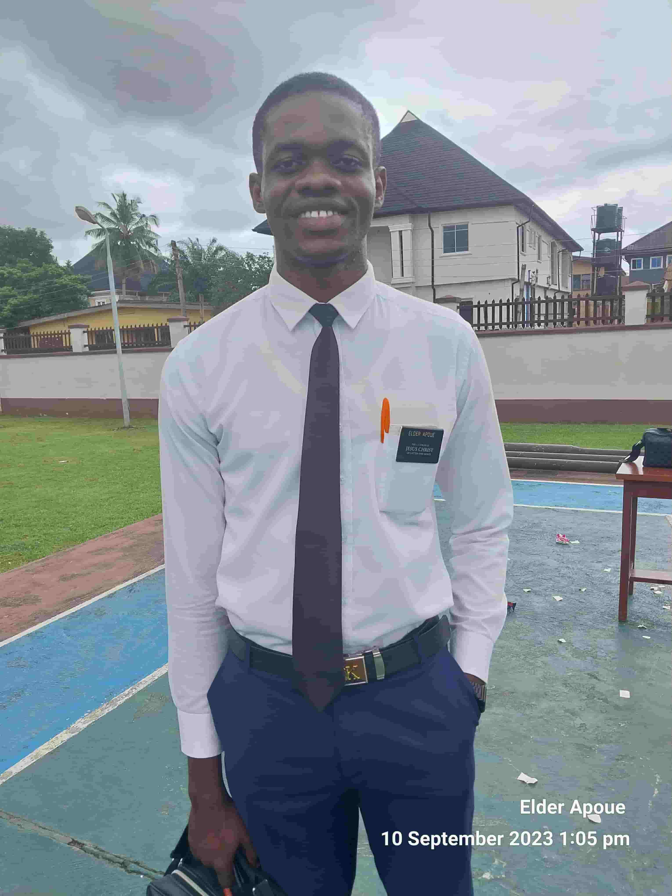

Apoue Raoul Kouadio | WDD 130

Hello! My name is Apoue Raoul Kouadio and I am from Bouake, Cote d'Ivoire. We speak French as our native language, and it was not until I went on a mission that I had the opportunity to learn to speak English as well. I served as a full-time missionary from 2022 to 2024 in the Nigeria Benin City Mission. I am glad to be part of this course. I like football, and my favorite football player is Lionel Messi. I also like spending weekends with friends to share good vibes and talk about the successes of the past week; I really value the time I spend with them. Every Sunday, I go to church with my family. Sunday is, for me, the most holy day in my life, where I feel closer to my Heavenly Father. So, may God lead us with confidence to succeed brilliantly in this course.